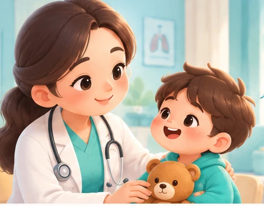

Bisa menyerang paru-paru
TB paling sering mengenai paru-paru, tetapi kuman juga bisa menyebar ke organ lain.
Kenali tuberkulosis pada anak, pelajari langkah perawatan, dan dampingi pengobatan dengan lebih tenang—semuanya dalam satu ruang belajar yang ramah keluarga.

Pilih topik edukasi yang ingin dibaca sesuai kebutuhan. Semua materi dapat diakses secara langsung.
Apa itu TB, penyebab, dan bagaimana kuman menyebar.
Mulai belajar ↗ 02 · KENALI TANDANYAKenali tanda yang perlu diperiksakan kepada tenaga kesehatan.
Kenali gejala ↗ 03 · PENDAMPINGANMemahami pemeriksaan, pengobatan, dan kontrol rutin.
Baca panduan ↗ 04 · PERLINDUNGANLangkah menjaga lingkungan dan mencegah penularan.
Pelajari ↗ 05 · DUKUNGANDukungan keluarga selama anak menjalani perawatan.
Baca tips ↗Catat minum obat dan lihat ringkasan catatan keluarga.
Buka dashboard ↗Tuberkulosis atau TB adalah penyakit menular yang disebabkan oleh bakteri Mycobacterium tuberculosis. Kuman TB paling sering menyerang paru-paru, tetapi juga dapat menyerang bagian tubuh lainnya.
TB paling sering mengenai paru-paru, tetapi kuman juga bisa menyebar ke organ lain.
Kuman TB dapat keluar ke udara saat penderita TB batuk atau bersin.
Bayi dan anak di bawah dua tahun termasuk kelompok yang memiliki risiko lebih tinggi mengalami sakit TB berat.
Gejala TB pada anak dapat mirip dengan penyakit lain, sehingga perlu diperiksa oleh tenaga kesehatan.
Batuk berlangsung lama dan tidak ada penyebab lain yang jelas.
Demam berlangsung lama atau berulang tanpa sebab yang jelas.
Berat badan turun atau tidak bertambah meskipun anak sudah makan dengan baik.
Anak menjadi kurang mau makan dan dapat mengalami gangguan pertumbuhan.
Anak tampak tidak bertenaga, mudah lelah, atau kurang aktif dari biasanya.
Keringat malam dapat muncul bersama keluhan lain seperti demam dan batuk.
Segera bawa anak ke fasilitas kesehatan bila mengalami sesak napas berat, kejang, penurunan kesadaran, muntah terus-menerus, tidak dapat makan atau minum, tubuh tampak kebiruan, atau kondisi memburuk dengan cepat.
Tenaga kesehatan dapat menggunakan beberapa pemeriksaan sesuai kondisi anak.
Membantu melihat kondisi paru-paru dan mendukung proses diagnosis TB.
Dilakukan dengan menyuntikkan bahan uji pada kulit, lalu hasilnya dibaca 48–72 jam kemudian.
Merupakan pemeriksaan darah untuk membantu skrining infeksi TB, tetapi membutuhkan fasilitas laboratorium.
Pemeriksaan bakteriologik, kultur sputum, atau Gene Xpert dapat digunakan untuk membantu menemukan bakteri TB.
Pengobatan TB berlangsung dalam beberapa bulan dan terdiri dari fase intensif serta fase lanjutan. Pada anak, dosis obat disesuaikan dengan berat badan. Obat tidak boleh dihentikan sendiri meskipun anak sudah terlihat membaik.
✓ Minum obat sesuai jadwal
✓ Kontrol sesuai anjuran
✓ Pantau berat badan
✓ Laporkan efek samping
Vaksin BCG diberikan pada bayi untuk membantu melindungi anak dari bentuk TB berat, seperti TB milier dan meningitis TB. Jadwal pemberian sebaiknya mengikuti anjuran layanan kesehatan.
Orang tua berperan besar dalam membantu anak menyelesaikan pengobatan dan tetap tumbuh dengan baik.
Bantu anak minum obat sesuai dosis dan jadwal dari tenaga kesehatan.
Kontrol rutin membantu memantau gejala, berat badan, dan keberhasilan pengobatan.
Berikan makanan bergizi seimbang dengan sumber protein, sayur, buah, vitamin, dan mineral.
Dengarkan keluhan anak, beri semangat, dan jangan membuat anak merasa dikucilkan.
Anggota keluarga yang tinggal serumah dengan penderita TB perlu mendapat perhatian dan pemeriksaan sesuai anjuran.
Jika muncul keluhan berat seperti muntah hebat, mata atau kulit kuning, ruam berat, atau gangguan penglihatan, segera hubungi tenaga kesehatan.
Kalender tersedia di halaman khusus agar lebih mudah digunakan setiap hari.
Kerjakan 5 pertanyaan singkat untuk melihat seberapa jauh kamu memahami TB pada anak.
Tidak selalu. Pada anak, gejala TB sering tidak khas dan dapat mirip dengan penyakit anak lainnya.
Tidak. Obat harus tetap diminum sampai tenaga kesehatan menyatakan pengobatan selesai.
Ya. Berat badan penting dipantau karena dosis obat pada anak dapat disesuaikan dengan perubahan berat badan.
Tidak. Anak tetap membutuhkan dukungan keluarga. Pencegahan penularan dilakukan sesuai arahan tenaga kesehatan dan kondisi masing-masing.